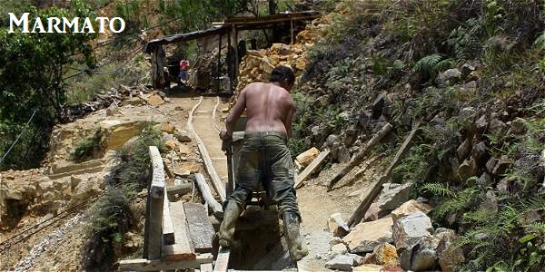

|  |
Marmato y la ilegalidad |
Gran Colombia Gold y los mineros locales |
|
La minería ilegal en Colombia en su mayoría, sucede en zonas donde están controladas por grupos armados. Los mineros excavan y buscan oro justo al lado de las maquinas, el oro, es uno de los minerales más preciados y buscados en esas zonas.
El oro en Colombia ocupa un lugar muy importante desde hace siglos.
En su alza de precio, miles de personas van a las minas para poder encontrar algo de oro, pero también el oro es motivo de las guerras armadas por esas zonas.
Las FARC se valen del oro para financiar la guerra. La vida de los mineros es ir a zonas de difícil acceso, pero para la mayoría ya es de costumbre por su corta edad en la que empezaron minando.
Como se dijo anteriormente, por el alza de precio, miles de personas llegan a esas zonas para excavar oro, por esta razón se crean estragos medio ambientales, las cuales siguen dando una razón para seguir con el conflicto armado, estas zonas son difíciles de controlar, por lo cual las armas que los soldados usan son financiadas por los Estados Unidos.
Cuando los mineros ilegales se enteran de que la policía va a ir a la zona, esconden la maquinaria y escapan de la zona.
El procedimiento a seguir si es que se encuentra la maquinaria con las que trabajaban, son confiscadas y cierran esas minas, aunque no termina siendo de gran ayuda cerrar la mina ya que en promedio se crean otras minas después de que se cierra una.
Las minas son peleadas principalmente por 3 grupos: El estado, Los neo paramilitares, Y las guerrillas izquierdistas como las FARC siendo estas consideradas como un grupo terrorista. El procedimiento para tener oro es el siguiente: Se pulveriza la roca, el oro se extrae y es puesto en fernedores con productos químicos altamente peligrosos como el cianuro, mercurio y ácido nítrico.
El oro se purifica con ácido para separarlo de otros elementos.
Para hacerse una idea de que el oro que es extraído en 1 mes, equivale a un poco más de la mitad de un vaso tintero, el cual equivale en promedio 1.000 dólares.
Marmato es una de las poblaciones más explotadas por el oro, el gobierno declaro Marmato zona insegura, aunque no por los deslizamientos de tierra, sino por las grandes empresas como Grand Colombia Gold.
Esa empresa quiere explotar la población y convertirla en una explotación a campo abierto.
Gran Colombia Gold es considerada por la gente trabajadora una empresa que quiere hacerse con Marmato sin importar a quien tengan que matar.
Las oposisiones por parte de los mineros locales ha dejado varios heridos y muertos, hasta el punto de abordar a alguien con pistola dos hombres armados.
Todo esto ha pasado por incluirse al sindicalismo, eso ha dejado varios heridos y muertos como se ha dicho anteriormente y también varios amenazados por paramilitares dirigidos según por los militares por Gran Colombia Gold.
Siendo asi alusión a la estadística de que Colombia es el país donde mas dirigentes sindicales son asesinados.
|